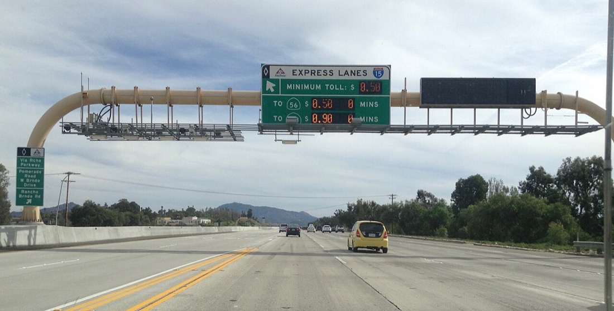
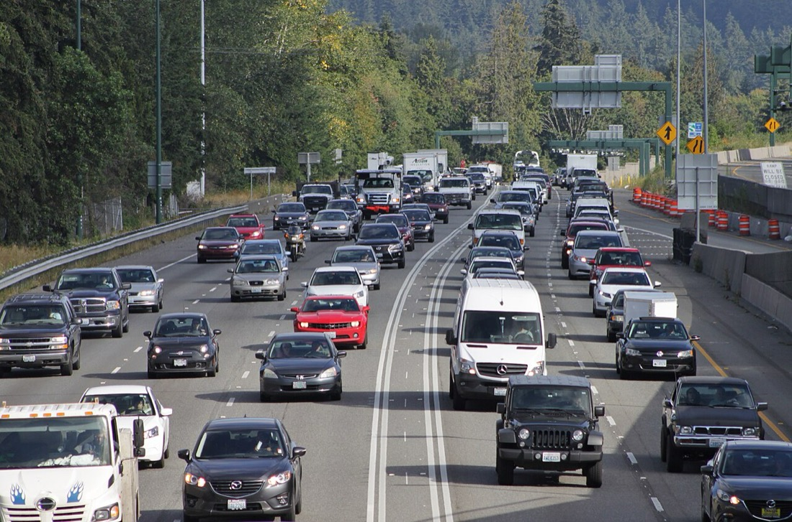

11주차. 도시교통
지난 시간: 도시주택과 공공정책
→ 오늘: 제4편 도시교통
18장: 자동차와 도로의 세 외부효과(혼잡 · 환경의 저하 · 교통사고)와 정책대응
19장: 통행수단과 대중교통체계의 선택
CHAPTER 18 자동차와 도로
비효율을 낳는 세 외부효과: 혼잡 · 환경의 저하 · 교통사고 · 교재 p.393~412
자동차: 미국 도시의 주요 통행수단 (통근통행의 88% · 모든 통행의 90%)
이 장의 초점: 자동차가 내는 세 외부비용, 혼잡 · 오염 · 교통사고
외부비용: 행위의 양을 정하는 사람이 아닌 다른 누군가가 겪는 비용
경제적 접근: 세금으로 외부성을 내재화 → 의사결정자가 선택의 전체 비용을 부담
→ 외부비용이 내재화되면 개별 의사결정자가 효율적으로 선택
01 혼잡의 외부효과
추가 차량 한 대가 다른 운전자 모두를 늦춤 · 교재 p.393~401
통행비용: 외부, 사적, 그리고 사회적
내가 고속도로에 진입할 때 발생하는 비용은?
한계외부비용 = m · v · c
m: 추가 차량 한 대가 늘리는 1인당 통행시간(분)
v: 기존 이용자 수 · c: 통행시간의 분당 기회비용
→ 내가 진입함으로써 다른 운전자에게 발생시키는 비용
사적 비용:운전자가 부담하는 금전 2.00 + 시간비용
v₀ 까지는 제한속도로 달려 3.00 에서 수평
v₀ 를 넘으면 속도가 떨어져 시간비용 증가
사회적 비용:사적 비용 + 외부비용
두 곡선의 세로 격차 = 한계외부비용
→ 통행량이 늘수록 격차가 커짐
v′: 4.00 + 2.40 = 6.40 · v″: 4.80 + 4.20 = 9.00
시장균형 대 효율적 결과
수요곡선 = 통행의 한계 사회적 편익
통행에는 양(+)의 외부효과가 없기 때문
시장균형:점 c: 수요 = 사적 비용 → 통행량 v*
효율적 결과:점 e: 수요 = 사회적 비용 → 통행량 vE
로이스(점 L):지불용의 5.50 > 사적 비용 4.80 → 도로 이용
지불용의 5.50 < 사회적 비용 7.70(점 f) → 비효율
→ v* > vE: 남에게 지우는 외부비용을 무시해 과다 통행
혼잡세
혼잡세 = vE 에서의 한계외부비용 2.40달러
사적 비용곡선이 세금만큼 위로 이동
→ 수요와 점 e(vE)에서 만남
1. 통행량 감소: v* → vE
지불용의 < 사적 비용 + 세금인 통행자가 떠남
2. 효율성 이득: 음영
떠난 통행의 사회적 비용 − 지불용의
로이스 한 명의 이득: 7.70 − 5.50 = 2.20
→ 세입이 동일할 때 혼잡세를 통한 세금징수는
다른 세금 감면효과를 지님
v* = 600, vE = 500이면 총세입은 1200달러,
소비자당 2달러 감면효과
혼잡세로부터의 이득과 손실
계속 이용하는 운전자 (점 H)
도로를 떠나는 운전자 (점 L)
→ 계속 이용(H): 시간 절약 0.80 + 감세 2.00 − 세금 2.40 = 순이득 0.40
→ 떠남(L): 감세 2.00 − 잃은 소비자잉여 0.70 (5.50 − 4.80) = 순이득 1.30
감세가 작아 일부가 손해를 보더라도 다른 소비자의 이득이 상쇄 → 소비자 전체 후생 증가
혼잡세 도시는 성장한다
출발: 같은 도시 둘이 6백만명씩 (점 a, 공통 효용 u*)
4주차 7장의 도시효용곡선을 다시 씀
혼잡세 도입:한 도시만 수입-중립 혼잡세 (소득세 인하와 결합)
집적의 불경제 감소 → 효용곡선 상향 이동
노동력이 클수록 많이 오름
이주 전:그 도시 u″(점 b) > 다른 도시 u* → 내쉬균형 아님
이주 후:7백만(점 d) · 5백만(점 c), 두 도시 모두 u**
→ u** > u*: 한 도시의 혼잡세 편익이 지역 전체로 퍼짐
02 혼잡세 시행
혼잡세의 실용성과 대안인 가치 가격책정 · 교재 p.401~405
혼잡세 시행
효율적 혼잡세: 효율적 통행량에서 두 비용곡선의 세로 격차 → 수요가 클수록 큼
수요가 낮으면 사적 비용곡선의 수평 구간에서 만남 → 혼잡도 세금도 없음
첨두시간 대 비첨두시간의 혼잡세 (교재 그림 18−7)
일부 도시에서의 혼잡세 (교재 그림 18−8)
출처: Parry and Small, American Economic Review 99, 2009
→ 첨두 혼잡세: 미국 두 도시는 비첨두의 약 10배, 런던은 미국 도시의 5~6배
→ 시행: 차량인식시스템(VIS)으로 자동 청구
싱가포르 지역면허(1974) → 전자 도로 요금(1998) · 런던 경계요금(2003) · 스톡홀름(2006)
가치 기반 가격책정과 HOT 차선의 사례

가치 기반 가격책정: I-15 급행차선
안내판에 최저 통행료와 목적지별 통행료를 표시
캘리포니아 에스콘디도(샌디에이고 카운티), 남쪽 방향
사진: Chevy111 (2014), Wikimedia Commons, CC BY-SA 4.0

HOT 차선: I-405 급행 통행료 차선
왼쪽은 일반 차선, 오른쪽 두 차선이 HOT 차선
워싱턴주 시애틀 대도시권, 남쪽 방향
사진: SounderBruce (2016), Wikimedia Commons, CC BY-SA 4.0
→ 북미 대도시: 카풀 차선을 바꾸거나 신규 차선을 지어 프리미엄 가격을 매김
오렌지 카운티(CA) · 샌디에이고 · 토론토 · 미네아폴리스 · 덴버
가치 기반 가격책정과 다인승차량 차선(HOT Lane)
급행차선:통행료를 내고 혼잡 없이 달리는 차선 (왼쪽 그림)
HOT 차선:최소 탑승인원(2~3명)을 채우거나 통행료를 내는 카풀 차선
고속 차선의 가격책정 (교재 그림 18−9)
일반 차선에 대한 급행차선의 효과 (교재 그림 18−10)
→ 통행료 = 교통량 v₀ 를 지키는 총비용 − 자유흐름 비용 c₀
시간 절약 > 통행료인 통행자, 곧 시간의 기회비용이 높은 통행자가 선택
→ 일반 차선(오른쪽 그림): 수요가 v′ − v‴ 만큼 빠져도 통행량은 v′ − v″ 만 감소
비용 하락 → 통행 재증가 (잠재수요)
03 환경 측면의 외부효과
대기오염과 온실가스: 주행 마일당 외부 환경비용 0.016달러 · 교재 p.405~408
휘발유세의 시장효과
오염세 대신 휘발유세: 차마다 배출량 측정이 어려움
오염세:저배출 차 구매 + 주행 감소
휘발유세:주행 감소만 · 저배출 차량을 구별하지 못함
우리나라 사례
휘발유세:교통·에너지·환경세, 휘발유 리터당 475원 · 경유 340원
오염세 성격:경유차 환경개선부담금, 소유자에게 반기마다 부과
배출가스가 현저히 적은 차량은 감면
교통·에너지·환경세법 제2조 · 환경개선비용 부담법 제9조
공급자에게 휘발유세를 부과할 경우 세금의 전가 발생
단, 그 정도는 수요와 공급의 가격탄력성에 의해서 결정됨
→ 가격 상승은 세금의 절반: 소비자와 생산자가 반씩
생산자 몫은 원유 공급자 부담 (원유 수요 · 가격 하락)
04 교통사고로 인한 외부효과
평균 사고비용 마일당 0.14달러 중 외부비용 0.061달러 · 교재 p.408~412
교통사고의 사회적 비용
주행 마일당 비용($)
| 사망 또는 부상 | 0.103 |
| 생산성 손실 | 0.013 |
| 의료비 | 0.008 |
| 재산 손해 | 0.007 |
| 법률, 경찰, 소방 | 0.004 |
| 보험 행정 | 0.003 |
| 교통 지연 | 0.002 |
| 합계 | 0.140 |
출처: Small and Verhoef, 2007
Parry, Journal of Urban Economics 56, 2004
(교재 표 18−1, p.409)
가장 큰 비용은 사망: 통계적 생명의 가치(VSL)로 환산
VSL:사망 위험을 피하려는 지불용의로 산출
1,000명이 각자 위험 0.001 을 없애려 5,500달러씩
→ 5.5백만 달러
사망 · 부상:VSL 550만 달러 기준
생산성 손실:둘째로 큰 비용 (회복 기간)
→ 합계 0.140 = 사적 비용 + 외부비용
운전자가 지지 않는 외부비용: 0.061
사고비용 과소가격책정의 비효율성
개인의 운전선택과 사회적 비용의 결정
한계 사적 비용:운전자 자신의 사고 위험 · 의료비 · 재산피해
합리적 선택:점 a: 수요 = 한계 사적 비용 → m*
효율적 결과:점 b: 수요 = 한계 사회적 비용(+0.061) → mE
자중손실:음영: mE ~ m* 에서 비용이 편익을 넘는 몫
m′ 에서는 점 c(비용)와 점 d(편익)의 간격
→ 대안: 운전하는 대로 지불하는 가격책정
주행거리(VMT)에 마일당 0.061달러 과세
안전장비와 위험보상
사고 확률: 주행거리 + 운전 행태(속도 · 주의)
한계편익:빨리 가서 아끼는 시간, 6달러로 일정
한계비용:기대사고비용, 속도와 함께 체증
초기 선택: 시속 43마일(점 a)
에어백:사고 결과 완화 → 한계비용곡선을 아래로 눕힘
합리적 속도 43 → 46마일(점 b)
→ 위험보상(Peltzman, 1975)
안전하다고 느끼면 더 빠르고 덜 주의해 운전
탑승자 사망 ↓ · 보행자와 자전거 이용자 사망 ↑
CHAPTER 19 도시 대중교통
통행수단과 대중교통체계의 선택 · 교재 p.421~437
“뉴웍, 필라델피아, 피츠버그, 그리고 보스턴 내 실제 운행되고 있는 전차는
단골손님과 정부의 지원이 부족하여 운영에 어려움을 겪고 있는 반면,
수백만 명의 사람들은 어디로도 가지 않는 모형 기차를 타기 위해
디즈니랜드로 무리를 지어 간다.”
— 케니스 잭슨
도시 교통의 두 번째 장으로 대중교통의 경제학을 봄
미국의 대중교통 시장점유율: 5% 미만 (미국 많은 도시와 다른 나라는 훨씬 높음)
두 관점
① 개인 통행자의 수단 선택: 승용차 · 버스 · 기차
② 지방정부의 교통시스템 설계: 자동차 · 버스 · 경전철 · 중전철의 조합
→ 대중교통 보조금의 경제적 합리성도 봄
01 수단선택: 개인 통행자
미국 통근자의 4.7%가 대중교통 이용 (중심도시 11% · 교외 2%) · 교재 p.421~427
선택가능한 수단별 통행비용
통행비용 = 금전비용 + 도보·대기 비용 + 차량 내 비용
금전비용:대중교통은 요금
자동차는 연료비 · 유지관리 · 감가상각 · 주차비
도보·대기 비용:Tw × dw (dw: 임금의 80~100%)
차량 내 비용:Tv × dv (dv: 임금의 50%)
T: 소요시간 · d: 1시간을 아끼려는 지불용의(한계비효용)
→ 걷고 기다리는 시간이 타고 가는 시간보다 훨씬 비쌈
→ 실제 대중교통 통근: 버스가 절반 이상, 전차는 작은 몫
교재 그림 19−1 대중교통 이용 (US Census Bureau, Journey to Work, 2004)
수단선택의 수치적 예시
시간 단가: 도보·대기 분당 0.40(= 임금) · 차량 내 분당 0.20(= 임금의 절반)
| 자동차 | 버스 | 철도 | |
|---|---|---|---|
| 금전적 비용($) | 6 | 3 | 3 |
| 도보·대기(분) | 0 | 20 | 45 |
| 도보·대기 비용($) | 0 | 8 | 18 |
| 차량 내(분) | 80 | 90 | 60 |
| 차량 내 비용($) | 16 | 18 | 12 |
| 총비용 | 22 | 29 | 33 |
버스: 승객을 태우려 정차 → 차량 내 시간이 자동차보다 김
철도: 혼잡이 없어 차량 내 시간은 짧고, 역 간격이 넓어 도보·대기는 김 (교재 표 19−1)
통근 비용($): 자동차 대 버스 대 철도 (교재 그림 19−2)
→ 자동차가 가장 쌈 (22 < 29 < 33): 도보·대기 비용 0 이 비싼 금전비용을 상쇄
→ 버스: 금전 이점 3달러 < 도보·대기 8 + 차량 내 2달러의 불리함
철도: 차량 내 4 + 금전 3달러의 이점 < 도보·대기 18달러의 불리함
대중교통 선호로의 균형 변경 효과
자동차 통근을 대중교통으로 바꾸게 하는 두 가지 변화
1. 인구밀도 증가
정류장 근처 통근자 증가
→ 배차 증가(도보·대기 ↓) · 급행버스(차량 내 ↓)
대중교통의 시간비용이 절반일 때 총비용
2. 소득 감소
임금 감소 → 두 시간의 한계비효용이 함께 감소
→ 금전비용이 싼 수단이 유리
임금이 분당 0.10일 때 총비용
→ 고밀도: 두 대중교통 모두 자동차보다 쌈 · 저임금: 버스가 가장 쌈
대중교통에 대한 수요의 탄력성
대중교통 수요의 가격탄력성
| 하루 중 시간대 | 버스 | 철도 |
|---|---|---|
| 첨두 수요 | −0.40 | −0.24 |
| 비첨두 | −0.80 | −0.48 |
| 전체 | −0.50 | −0.30 |
출처: Parry and Small, American Economic Review 99, 2009
(교재 표 19−2, p.426)
전반적 가격탄력성 −0.40: 요금 10% 인상 → 승차 4% 감소
버스가 철도보다, 비첨두가 첨두보다 탄력적
비탄력적 → 요금 인상 시 총 요금수입 증가
실증연구의 두 관찰
1. 가격보다 서비스에 민감
보스턴: 가격탄력성 −0.50 · 통행시간 탄력성 −0.80
2. 차량 내 시간보다 도보·대기 시간에 민감
02 대중교통의 비용과 가격책정
규모의 경제 → 효율적 가격 < 평균비용 → 효율을 위해 보조금이 필요 · 교재 p.427~431
대중교통 시스템의 비용곡선
대중교통 이용은 규모의 경제(economies of scale) 존재
비용 = 공급자의 자본 · 운영비용 + 승객의 시간비용
1. 분리불가능한 투입요소
선로 · 열차 · 전력 시스템은 작게 나눌 수 없음
→ 승객이 늘면 고정비가 나뉨
2. 승객수의 경제
승객 증가 → 배차간격 축소 → 대기시간 감소
→ 평균비용이 하락하므로 한계비용은 그 아래
→ 혼잡과 반대: 추가 승객은 남에게 외부편익(잦은 배차)
추가 운전자는 남에게 외부비용(지연)
효율적인 승객수와 가격책정
수요곡선 = 승차의 한계편익
비용곡선은 생산비용만 담음 (시간비용이 변하면 수요가 이동)
효율:점 a: 수요 = 한계비용 → 요금 pE · 승객 RE
적자:RE 에서 평균비용 acE > 요금 pE → 음영 직사각형
예산균형:요금 p′ → 승객 R′(점 c)
R′ ~ RE: 편익 > 비용인데 못 탐 → 비효율
→ 보조금은 효율 측면에서 정당화
상위 20개 대도시 평균 보조금: 운영비용의 54%
→ 문제: 운영자에게 비용 최소화 유인 없음
해법: 운영자 기반에서 이용자 기반(승객-마일당) 보조로
03 대중교통 시스템 선택
교통 설계자의 관점: 핵심은 인구밀도와 고용이 정하는 총수요 · 교재 p.431~437
승객수의 평균비용
평균비용 = 자본 + 운행 + 승객 시간비용
→ 승객이 많을수록 하락
승객규모:승객규모가 많을수록 전철이, 적을수록 자가용이 유리
승용차와 도로:교통량에 맞춰 도로를 넓힌다고 가정했을 때
수평의 비용곡선
→ 버스는 6천명 수준일 때부터 승용차와 경쟁가능
인구가 충분하지 않으면 중전철 도입어려움
전형적인 주거밀도의 미국 도시 (교재 그림 19−6, Small and Verhoef, 2007)
대중교통 시스템과 토지이용 형태
교통기술은 토지이용을 바꿈
20세기 초 단일도심도시: 전차 · 마차 · 보도의 결합 (7주차)
교외화: 트럭 · 고속도로 → 제조업 고용 · 정보기술 → 정보 고용 · 자동차 → 거주
그러면 철도를 지으면 역 주변 밀도가 높아져 수요가 생기는가
애틀랜타 MARTA:1990~1999년 인구 70만 증가 중 역 800m 이내를 고른 몫: 거주자 2% · 일자리 1%
샌프란시스코 BART:시내 역 근처 고용에만 작은 양(+)의 효과
→ 대중교통의 공급이 대중교통 수요를 만들지는 않음
→ 토지이용 정책(용도지역제 · 재산세)이 고밀도를 만들면
철도는 다수의 근로자를 고밀도 고용지역으로 나르는 효율적 수단
Q & A
권규상 Kyusang Kwon
(kyusang.kwon@chungbuk.ac.kr)